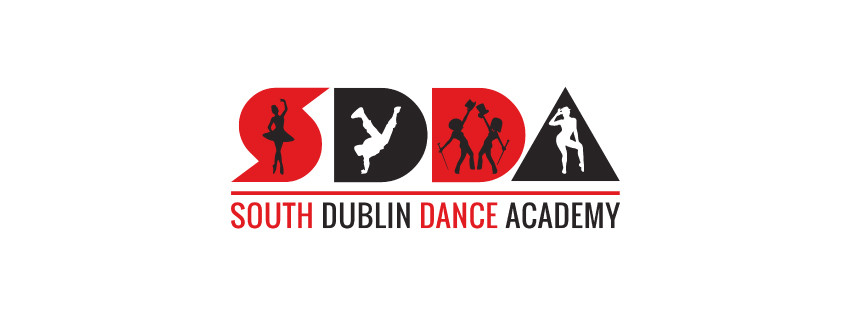
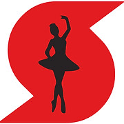
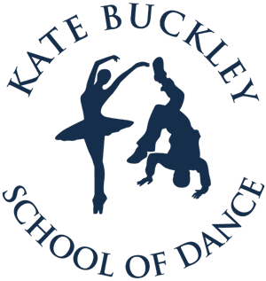
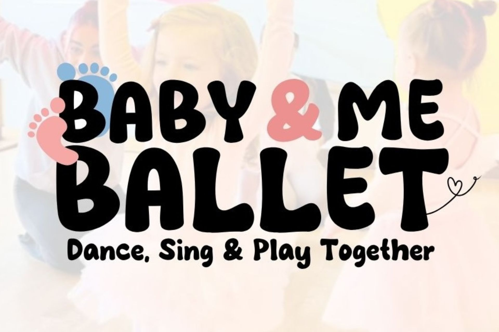
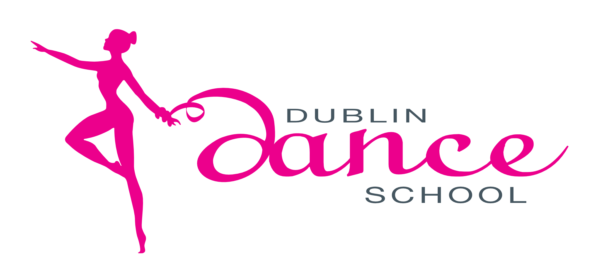
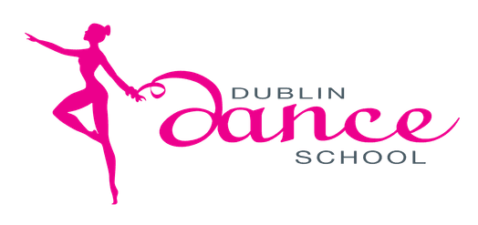

Dance Classes in Dublin
Explore 30 Dance classes for kids in Dublin, Ireland. Compare schedules, ages and pricing below, or contact a provider directly to book.


South Dublin Dance Academy
Ballet classes teaching posture, physical strength, coordination, balance and agility, providing a technical foundation for all other dance genres taught at the academy.
View full details →South Dublin Dance Academy
Urban-style hip hop dance class using current music, teaching choreography and rhythm in a fun, energetic environment for children and teens.
View full details →South Dublin Dance Academy
Tap dance classes exploring rhythm and percussion through footwork, building musicality alongside coordination and confidence for young dancers.
View full details →
Kate Buckley School of Dance
Ballet classes improving posture, coordination, concentration, musicality and confidence, with the option to sit RAD and ISTD ballet examinations.
View full details →Kate Buckley School of Dance
Hip-Hop dance class taught using the school's own syllabus, featuring intricate movements, isolations, rhythm work and new routines each week.
View full details →Kate Buckley School of Dance
Tap dance classes teaching ISTD tap technique and rhythm, suitable for a wide age range with the option to progress towards ISTD examinations.
View full details →

Baby & Me Ballet Dublin
Explore ballet through dance, music & play while bonding, socialising & making memories. Your little one will develop motor skills, coordination & balance in a playful environment. For babies and toddlers aged 14-30 months and their parents. Find us in the Fingal Liam Rodgers Centre, Drinan, Swords. Classes are 45 minutes and run on Tuesdays and Saturdays. Keep up to date on our social media.
View full details →Dizzy Footwork (Dance, Drama & Acrobatic)
Dizzy Footwork Dance Academy offers exciting, professional classes in drama, lyrical dance, hip hop dance, and acrobatics for children and teenagers of all ages and abilities. The academy is led by highly experienced, passionate staff dedicated to helping every student grow in confidence, creativity, performance, fitness, and teamwork within a fun and supportive environment. Classes are grouped by age, allowing students to learn alongside their peers while developing new skills, friendships, and self-expression. Class schedule: Tiny Tots Preschool (age 3): Monday Drama 3:45-4:45pm, Friday Hip Hop Dance 3:45-4:45pm, Friday Acrobatics 4:45-5:45pm. Mini Movers (ages 4-7): Monday Drama 3:45-4:45pm, Monday Lyrical Dance 5:45-6:45pm, Friday Hip Hop Dance 3:45-4:45pm, Friday Acrobatics 4:45-5:45pm. Crazy Crew (ages 8-12): Monday Drama 4:45-5:45pm, Monday Lyrical Dance 5:45-6:45pm, Friday Hip Hop Dance 4:45-5:45pm, Friday Acrobatics 5:45-6:45pm. Little Legends (ages 13-18+): Monday Drama 5:45-6:45pm, Monday Lyrical Dance 6:45-7:45pm, Friday Hip Hop Dance 5:45-6:45pm, Friday Acrobatics 6:45-7:45pm. To register, text your child's full name, age, and the class you'd like to join to 0831385263.
View full details →Do Your Dance Kids - Mountanville
Do Your Dance Kids is for older kids aged 7+ who are ready to take their dance skills to the next level. Classes are packed with exciting choreographed dances, dance techniques, and flexibility exercises in a fun-filled, one-hour session, exploring a variety of dance genres from hip-hop and jazz to contemporary. All children are welcome in a completely inclusive environment that celebrates individuality and creativity - if your child has additional needs, just let us know before class and we'll make sure they have the best experience possible. Location: the GP Room at Mount Anville Montessori Junior School. Wednesdays, 18:00-19:00. To find us, enter the gates and follow the arrows up to the roundabout - you can park beside the astro fields, then come through the blue gates to the right of the roundabout and follow the astro turf to the double doors; the GP Room is right there, just follow the music. Parking is plentiful and free. During class, parents are welcome to quietly watch in the GP Room or wait outside in the corridor, or drop off and return at pick-up time if you're comfortable doing so. Children should wear comfortable clothing and closed-toe shoes, and bring a water bottle (a water fountain and bathrooms are available on site). Please arrive 10 minutes before class to get your child ready to dance. If you can't make it, let us know via phone (0877007298) or email (doyourdancefitness@gmail.com) 24 hours before class.
View full details →Do Your Dance Tots - Blackrock
Do Your Dance Tots: Saturdays, 10:15-11am (ages 2-4), Newtownpark Pastoral Centre, Blackrock. Perfect for tiny dancers around 2 years old, though younger kids are welcome if they're ready to groove. Watch your little ones build strength, balance, and coordination through playful, follow-along dances, interactive games, and joyful singing throughout the 45-minute class - every session is a mini-adventure filled with movement and music, helping tots develop key motor skills while having a blast. All children are welcome in a completely inclusive environment - if your child has additional needs, please let us know before class so we can ensure they have the best experience possible. Parking is plentiful and free. Room 2 isn't the biggest, so parents are encouraged to wait just outside in the comfy couch area with the door open - you're welcome to peek in, take photos, or join your child in the fun, or stay with them the entire time if you'd prefer; parents must stay on the premises for the duration of the class. Please dress your child in comfortable clothing and closed-toe shoes and bring a water bottle (a water fountain and bathrooms are also available). Arrive 10 minutes before class to get settled. If you can't make it, let us know via phone (0877007298) or email (doyourdancefitness@gmail.com) 24 hours before class.
View full details →

Dublin Dance School
Dance With Me classes for age 2, with guardian participation. Ballet classes from age 3 upwards, at Wayside Celtic Football Club.
View full details →Irish Dance Classes
Classes open to children aged 3+. Every Wednesday at 5:30 - 6:30pm
View full details →
Malahide Girls' Brigade
Starting Saturday 19th September 2026, Malahide Girls' Brigade are looking for new members aged 2-18+. We do a mixture of dance, singing, skipping, and games. Class times: Tiny Tots (2-4 years), Saturdays 1.15-2.15pm; Explorers (5-8 years), Saturdays 1.15-3.15pm; Juniors (9-11 years), Saturdays 2-4pm; Seniors (12-13 years), Saturdays 2-4pm; Brigaders (14-17 years), Saturdays 12.30-1.30pm; Associates (18+ years), Saturdays 12.30-1.30pm. We are a uniformed organisation, with uniforms supplied from our stores. Interested? Contact Ruth on 0879389727.
View full details →Rosey Stars 🌟
Kids Zumba Classes led by a licensed and insured instructor. This high-energy class blends dance, movement, music, and fun, designed especially for children. Classes are run by Rosey Stars, a small local business, with a passionate acting and singing coach with years of experience on stage and screen. The focus is on fun, confidence, coordination, creativity, and having a great time in a safe, supportive environment. Location: Lusk Parish Hall. Day: Fridays. Class times by age group: ages 4-6, 4pm; ages 7-10, 5pm. Children are welcome to attend with support from their caregivers, including mum, dad, grandparents, or legal guardians - we love a supportive audience! Caregivers are welcome to stay, especially for younger children, but are not required to remain for the full class once the child is settled and comfortable. Kids should wear comfortable shoes suitable for dancing and comfortable clothes that allow free movement, and bring a water bottle to stay hydrated - no special equipment needed, just energy and smiles. Sibling discounts are available, classes are age-appropriate, structured, and fun, and it's a great way for kids to have fun, stay active, socialise, and build confidence.
View full details →Stagekidz Academy
Classes in Terenure, Lucan, & Blanchardstown! For ages 4yrs+, classes led by industry professionals where all children are encouraged to develop confidence and self belief. No term fees, weekly payment!
View full details →Tiny Tutus
Tiny Tutus offers magical ballet classes for children aged 2 to 14 years in a warm and nurturing environment. Our most popular classes are the Tutu & Me parent & child ballet sessions for toddlers aged 2 to 3.5 years. These special classes are designed for little dancers and their caregivers to enjoy music, movement, imagination and bonding time together. We also offer independent ballet classes for preschool and school-age children, helping students build confidence, coordination, creativity and a love for dance. Parents, grandparents or caregivers are welcome to attend the Tutu & Me classes and are required to stay for the duration of the session. For independent classes, drop-off options may vary depending on age. Children are required to wear appropriate ballet attire for regular classes. For trial classes, comfortable clothes suitable for movement are perfectly fine. Classes take place in different locations across North & South Dublin and Kildare. Please check our schedule at tinytutusie.com for class locations and times.
View full details →Back Street Dance
Located 4 minutes' drive from Dublin Airport, Back Street Dance has been home to a number of Ireland's funkiest kids' and hip hop champion dancers for over 5 years. They have classes for children from 2.5 years to adults.
View full details →Dance Sport
Whether your child is interested in learning hip hop, latin, ballroom or even stage and theatre, Kids Dance Classes have various styles to choose from. The earliest a child can start is 3. There are different age groups and levels. Simply get in touch and we will find a school that is close and suitable for your child or children.
View full details →Debbie Allen Dance School
The school provides classes in ballet, modern and tap for ages 3 ½ year and upwards. Classes are held in a friendly atmosphere, encouraging confidence and a love of dance. Pupils are entered for RAD and ISTD exams if they wish, which they encourage, as it gives them a goal. Taking exams improves the pupils technically, artistically and gives them confidence.
View full details →Mel Ryan School
Mel Ryan School offers a vibrant mix of dance, drama, and singing classes for children of all ages, with a warm, family-friendly atmosphere that encourages confidence and creativity. Based in Dublin, the school blends professional training with a focus on fun, ensuring every child feels welcome whether they’re taking their first steps in ballet or performing on stage. Classes are taught by experienced teachers who nurture both skills and self-expression, making it a perfect choice for young dancers who want to learn, grow, and shine.
View full details →Stagekidz Academy
Classes in Terenure, Lucan, & Blanchardstown! For ages 4yrs+, classes led by industry professionals where all children are encouraged to develop confidence and self belief. No term fees, weekly payment!
View full details →Stagekidz Academy
Classes in Terenure, Lucan, & Blanchardstown! For ages 4yrs+, classes led by industry professionals where all children are encouraged to develop confidence and self belief. No term fees, weekly payment!
View full details →Tiny Tutus
Tiny Tutus offers magical ballet classes for children aged 2 to 14 years in a warm and nurturing environment. Our most popular classes are the Tutu & Me parent & child ballet sessions for toddlers aged 2 to 3.5 years. These special classes are designed for little dancers and their caregivers to enjoy music, movement, imagination and bonding time together. We also offer independent ballet classes for preschool and school-age children, helping students build confidence, coordination, creativity and a love for dance. Parents, grandparents or caregivers are welcome to attend the Tutu & Me classes and are required to stay for the duration of the session. For independent classes, drop-off options may vary depending on age. Children are required to wear appropriate ballet attire for regular classes. For trial classes, comfortable clothes suitable for movement are perfectly fine. Classes take place in different locations across North & South Dublin and Kildare. Please check our schedule at tinytutusie.com for class locations and times.
View full details →Tiny Tutus
Tiny Tutus offers magical ballet classes for children aged 2 to 14 years in a warm and nurturing environment. Our most popular classes are the Tutu & Me parent & child ballet sessions for toddlers aged 2 to 3.5 years. These special classes are designed for little dancers and their caregivers to enjoy music, movement, imagination and bonding time together. We also offer independent ballet classes for preschool and school-age children, helping students build confidence, coordination, creativity and a love for dance. Parents, grandparents or caregivers are welcome to attend the Tutu & Me classes and are required to stay for the duration of the session. For independent classes, drop-off options may vary depending on age. Children are required to wear appropriate ballet attire for regular classes. For trial classes, comfortable clothes suitable for movement are perfectly fine. Classes take place in different locations across North & South Dublin and Kildare. Please check our schedule at tinytutusie.com for class locations and times.
View full details →Tiny Tutus
Tiny Tutus offers magical ballet classes for children aged 2 to 14 years in a warm and nurturing environment. Our most popular classes are the Tutu & Me parent & child ballet sessions for toddlers aged 2 to 3.5 years. These special classes are designed for little dancers and their caregivers to enjoy music, movement, imagination and bonding time together. We also offer independent ballet classes for preschool and school-age children, helping students build confidence, coordination, creativity and a love for dance. Parents, grandparents or caregivers are welcome to attend the Tutu & Me classes and are required to stay for the duration of the session. For independent classes, drop-off options may vary depending on age. Children are required to wear appropriate ballet attire for regular classes. For trial classes, comfortable clothes suitable for movement are perfectly fine. Classes take place in different locations across North & South Dublin and Kildare. Please check our schedule at tinytutusie.com for class locations and times.
View full details →Tiny Tutus
Tiny Tutus offers magical ballet classes for children aged 2 to 14 years in a warm and nurturing environment. Our most popular classes are the Tutu & Me parent & child ballet sessions for toddlers aged 2 to 3.5 years. These special classes are designed for little dancers and their caregivers to enjoy music, movement, imagination and bonding time together. We also offer independent ballet classes for preschool and school-age children, helping students build confidence, coordination, creativity and a love for dance. Parents, grandparents or caregivers are welcome to attend the Tutu & Me classes and are required to stay for the duration of the session. For independent classes, drop-off options may vary depending on age. Children are required to wear appropriate ballet attire for regular classes. For trial classes, comfortable clothes suitable for movement are perfectly fine. Classes take place in different locations across North & South Dublin and Kildare. Please check our schedule at tinytutusie.com for class locations and times.
View full details →Dance Sport
Whether your child is interested in learning hip hop, latin, ballroom or even stage and theatre, Kids Dance Classes have various styles to choose from. The earliest a child can start is 3. There are different age groups and levels. Simply get in touch and we will find a school that is close and suitable for your child or children.
View full details →Mel Ryan School
Mel Ryan School offers a vibrant mix of dance, drama, and singing classes for children of all ages, with a warm, family-friendly atmosphere that encourages confidence and creativity. Based in Dublin, the school blends professional training with a focus on fun, ensuring every child feels welcome whether they’re taking their first steps in ballet or performing on stage. Classes are taught by experienced teachers who nurture both skills and self-expression, making it a perfect choice for young dancers who want to learn, grow, and shine.
View full details →Mel Ryan School
Mel Ryan School offers a vibrant mix of dance, drama, and singing classes for children of all ages, with a warm, family-friendly atmosphere that encourages confidence and creativity. Based in Dublin, the school blends professional training with a focus on fun, ensuring every child feels welcome whether they’re taking their first steps in ballet or performing on stage. Classes are taught by experienced teachers who nurture both skills and self-expression, making it a perfect choice for young dancers who want to learn, grow, and shine.
View full details →Mel Ryan School
Mel Ryan School offers a vibrant mix of dance, drama, and singing classes for children of all ages, with a warm, family-friendly atmosphere that encourages confidence and creativity. Based in Dublin, the school blends professional training with a focus on fun, ensuring every child feels welcome whether they’re taking their first steps in ballet or performing on stage. Classes are taught by experienced teachers who nurture both skills and self-expression, making it a perfect choice for young dancers who want to learn, grow, and shine.
View full details →